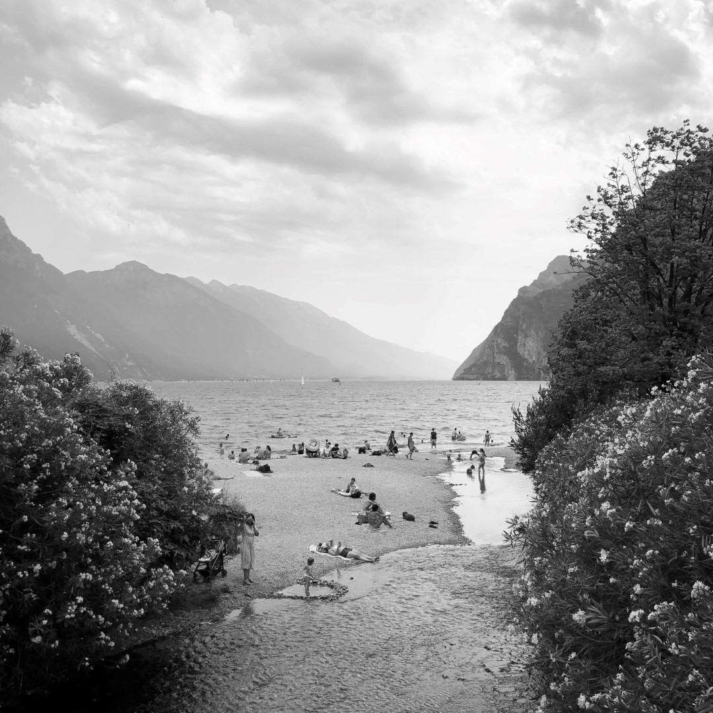

Vorrei condividere con voi due delle mie grandi passioni che mi riempiono di gioia e mi spingono a dare il massimo ogni giorno. La mia prima passione è la fotografia. Fin da quando ero giovane, sono stato attratto dalla possibilità di catturare momenti unici e creare ricordi duraturi attraverso l'obiettivo della mia macchina fotografica. Mi piace esplorare diverse tecniche fotografiche e sperimentare con luci e ombre per creare immagini che raccontano storie. Che si tratti di paesaggi mozzafiato, ritratti emozionanti o eventi speciali, la fotografia mi consente di esprimere la mia creatività e di cogliere l'essenza di ciò che mi circonda.
La mia seconda passione è il giardinaggio. Mi piace trascorrere del tempo all'aria aperta, circondato dalla bellezza della natura e dei suoi colori vivaci. Coltivare piante e fiori mi dà un senso di pace interiore e mi permette di mettere alla prova la mia pazienza e il mio impegno. Sono sempre alla ricerca di nuove specie da coltivare e di nuovi modi per creare un giardino che sia un'oasi di serenità. Condivido volentieri i miei consigli e le mie esperienze sul mio sito web per aiutare gli altri a creare il proprio angolo di paradiso verde.

Sia la fotografia che il giardinaggio mi permettono di esplorare la bellezza del mondo che ci circonda e di cogliere le piccole gioie della vita. Sono sempre aperto a nuove sfide e ad apprendere cose nuove, quindi se avete domande o volete collaborare con me, non esitate a contattarmi. Sarà un piacere condividere le mie passioni con voi e apprendere dalle vostre esperienze.